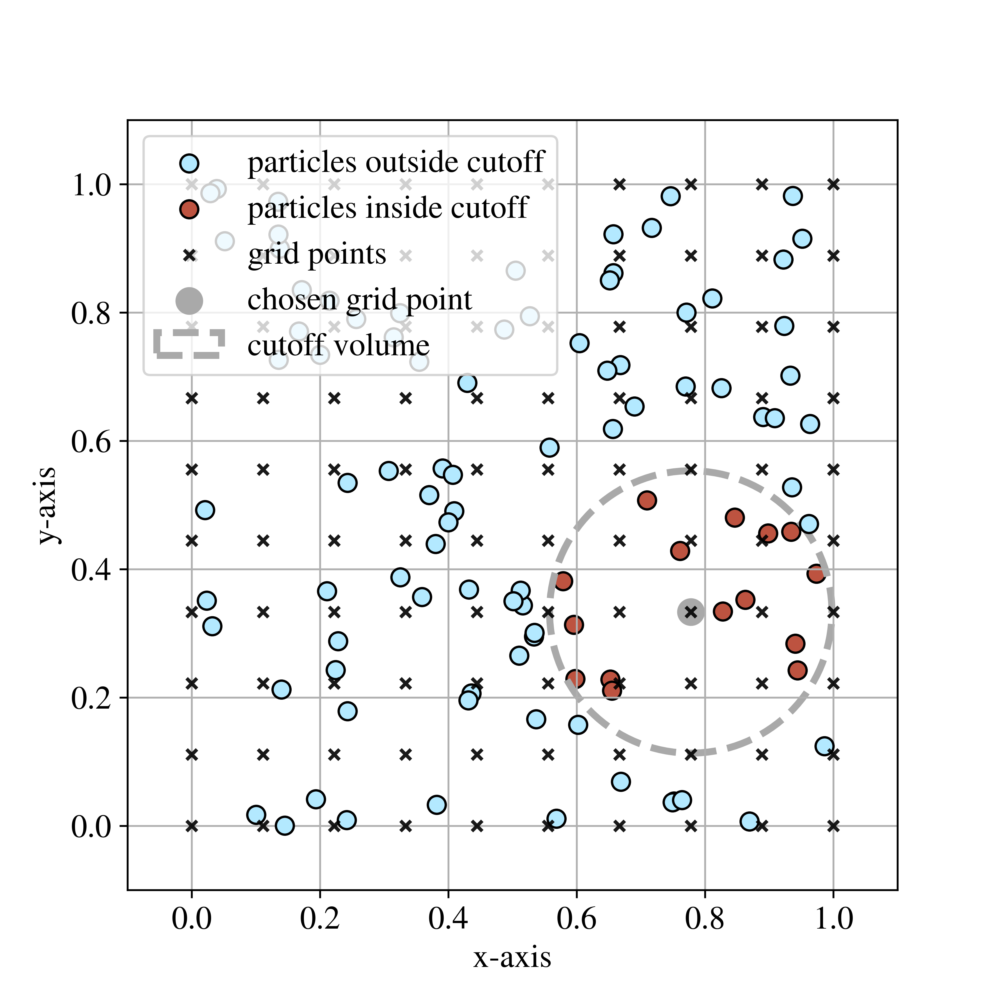
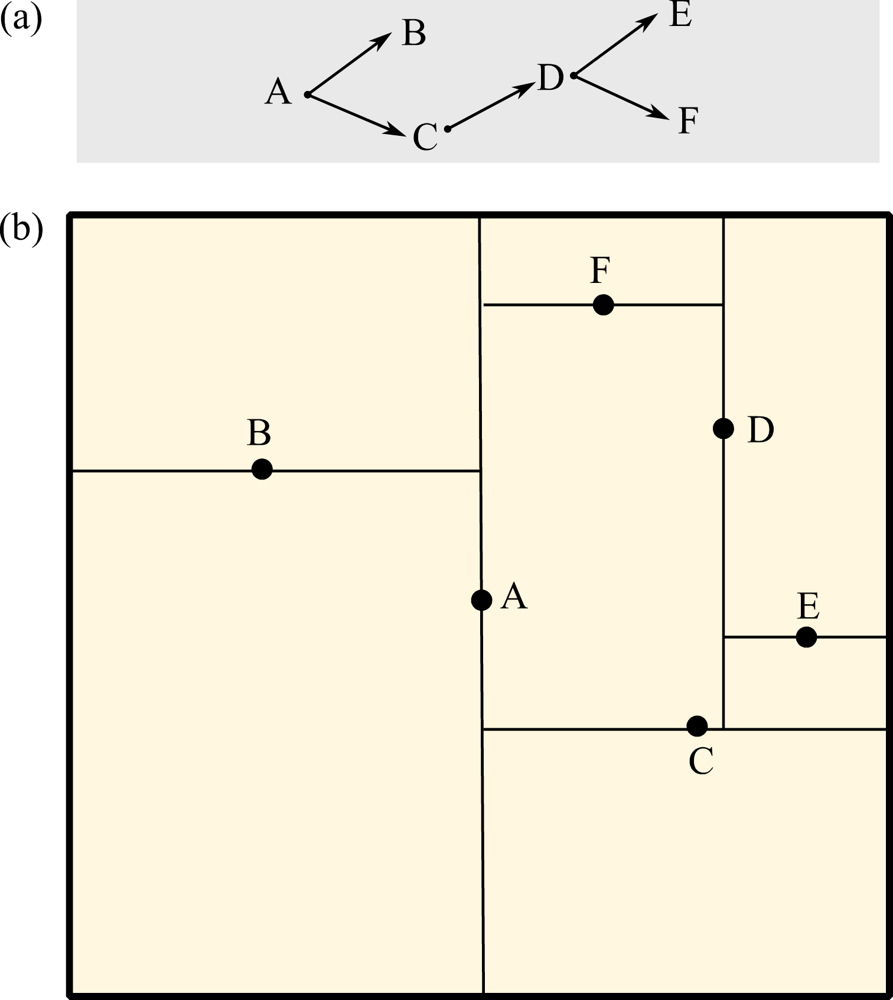
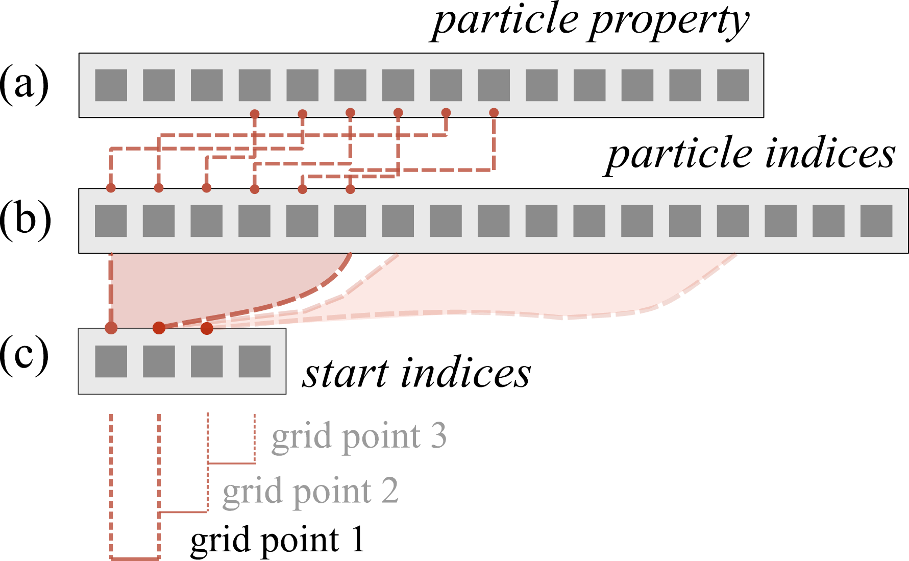

Neighbour Search
pysammos.neighbour_search package
Subpackage containing neighbour search algorithms applied to associate particles to grid points.
{kind=link}

Example of neighbour search. Visualisation of particle-to-node association. This plot displays an xy-plane projection of a synthetic set of particle positions in 3D (blue dots) within the framework of a regular grid (crosses). The particles associated to the grey grid point (red dots) are those within the cut-off volume (grey circle). The size of the dots is not informative of the size of the particles. For sake of simplicity, no units are provided.
Grid Particle Search module
pysammos.neighbour_search.grid_particle_search module
Module for efficiently matching particles to grid points within a cutoff radius and calculating displacement vectors and distances between them.
This module contains two main functions:
particle_node_match(): Uses kd-tree spatial queries to find particles within a cutoff radius of each grid point, returningstart indices and a flattened array of matching particle indices.
calc_displacement(): Computes displacement vectors and distances between each grid point and its neighboring particles,using the output of particle_node_match.
These functions facilitate coarse-graining operations by quickly associating particles to grid points and calculating relative positional data in an optimized manner.
- Terminology:
\(N_{points}\): Number of coarse-graining grid points.
\(N_{particles}\): Number of particles in the system.
\(N_{total\_neighbors}\): Total number of particle-grid point neighbor pairs found within the cutoff distance.
\(c\): Cutoff distance for neighbor searching.
- pysammos.neighbour_search.grid_particle_search.calc_displacement(GridPoints, Particle_Position, start_indices, visibility)
Calculate displacement vectors and distances between grid points and visible particles.
Inputs
- GridPointsnp.ndarray, shape(N_points, 3)
Coordinates of coarse-graining grid points.
- Particle_Positionnp.ndarray, shape(N_particles, 3)
Coordinates of particles.
- start_indicesnp.ndarray, shape(N_points + 2,)
Start indices into the visibility array for each grid point. Assumes padding: start_indices[0] = 0, start_indices[-1] = len(visibility).
- visibilitynp.ndarray, shape(N_total_neighbors,)
Flattened array of particle indices visible to each grid point.
Outputs
- displacement_vectorsnp.ndarray, shape(N_total_neighbors, 3)
Displacement vectors from each particle to the corresponding grid point.
- distancesnp.ndarray, shape(N_total_neighbors,)
Euclidean distances corresponding to displacement vectors.
- pysammos.neighbour_search.grid_particle_search.particle_node_match(GridPoints, Particle_Position, c)[source]
Find particles within a cutoff distance of each grid point using kd-tree queries.
- Return type:
Tuple[ndarray,ndarray]
Inputs
- GridPointsnp.ndarray, shape(N_points, 3)
Coordinates of the coarse-graining grid points in 3D space.
- Particle_Positionnp.ndarray, (N_particles, 3)
Coordinates of particles in 3D space.
- cfloat
Cutoff distance within which particles are considered neighbors to grid points.
Outputs
- start_indicesnp.ndarray, shape(N_points + 2,)
Array of start indices into the flattened particle indices array for each grid point. Includes padding: start_indices[0] = 0 and start_indices[-1] = total number of matched particles.
- particle_indices_flatnp.ndarray, shape(N_total_neighbors,)
Flattened array of particle indices that lie within cutoff distance of each grid point. The neighbors of grid point i are located in particle_indices_flat[start_indices[i]:start_indices[i+1]].
A k-d tree is a data structure built from recursively bisecting the search space in every dimension and collecting the coordinates of those splitting planes. Below is a simplified example of a kd-tree in 2D:
{kind=link}

Diagram of kd-tree neighbour search. Simplified example of a kd-tree in 2D (a) corresponding to the divisions in space shown in (b). Each level of the tree corresponds to a labelled line in the spatial visualisation. The levels of the tree alternate in axes (e.g., A is vertical, B and C are horizontal). Note that only a single branch is built completely, while others stop in earlier levels.
The particle-node association data are exported by the k-d tree algorithm as two arrays. The first array contains the indices of particle data arrays (e.g., position), for each particle at each grid point in sequential order. The second array contains the offsets into the first array, providing the starting index of the particles associated with a given grid point. Note that this relation is correct given that the arrays containing particle data arrays are sorted by particle ID just after being read. Empty grid points (i.e., those with no particles within the cut-off radius) are handled by appearing as zero-length slices in the second array, thus ensuring both efficiency and robustness. See the figure below for a schematic representation.
{kind=link}

Example of neighbour search output. Schematic representation of the relation between the particle properties arrays (a) and the arrays exported by the function neighbour_search.grid_particle_search.particle_node_match: the particle indices array (b), containing the indices of particle properties arrays in sequential order for each particle at each grid point; and the start indices array (c), providing the starting index of the particles associated with a given grid point. This relation is correct given that the arrays containing particle properties are sorted by particle ID.